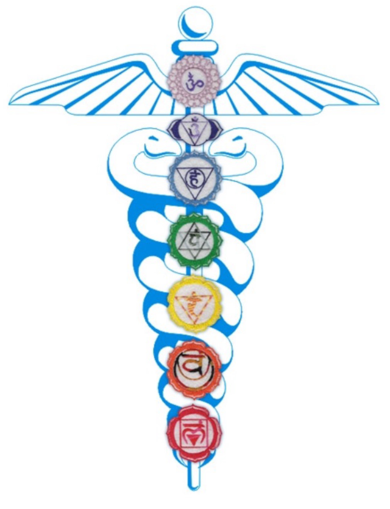
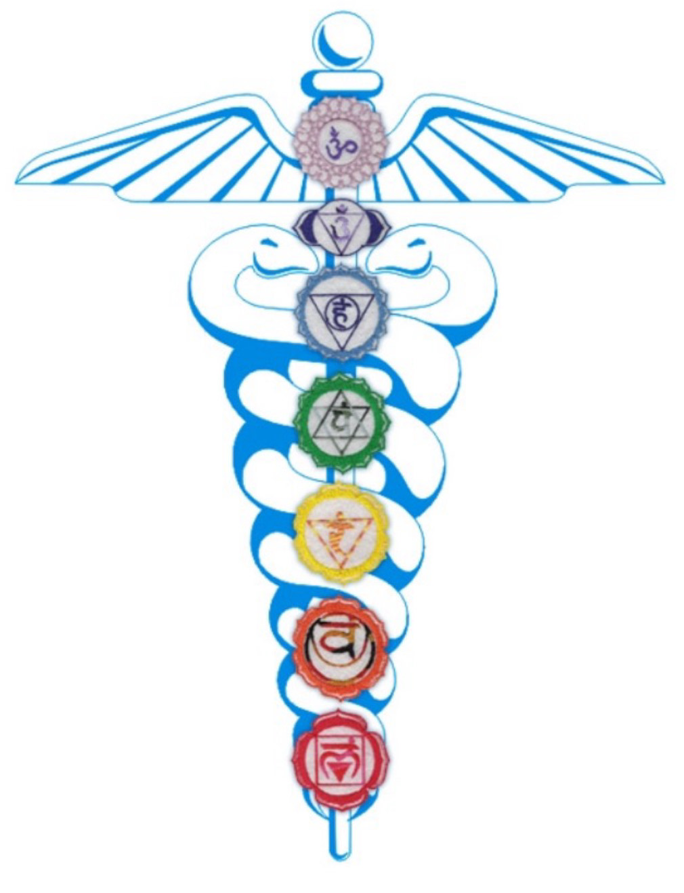

CHAKRAS AND PHYSICAL BODY
Chakra balancing through guided energy work and gentle touch. This practice promotes harmony between the physical and energetic body, helping to release blockages and restore natural flow. Benefits include reduced stress, improved emotional well-being, enhanced focus, and relief from tension in the body, supporting overall balance and vitality.
First Saturday (2hrs)
February-September 2025
Small classes only
Call for information (570) 762-5482
 
